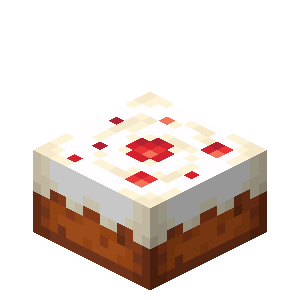

| Ингредиент | Кол-во |
|---|---|
| Ведро молока | 3 |
| Сахар | 2 |
| Любое яйцо | 1 |
| Пшеница | 3 |
После крафта вёдра с молоком заменятся на вёдра и останутся в окне крафта.
Каждый кусочек восстанавливает 2 единицы голода. Торт не съедается целиком, как обычная еда! Нужно поставить торт на стол, затем повзаимодействовать с ним вместе с друзьями – так каждый получит свой кусочек.
В торт можно поставить свечи, чтобы поздравить кого-то с Днем Рождения :3.
Некоторые панды могут подойти к выпавшему торту, подобрать его и съесть.